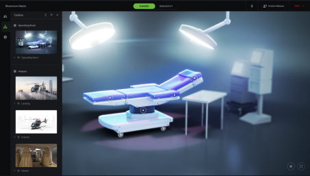
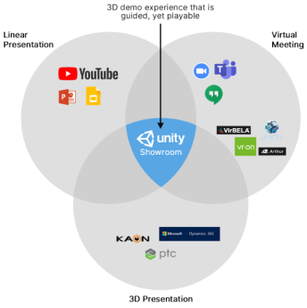
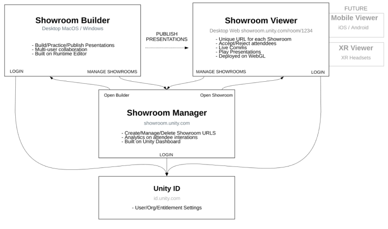

Unity: Sales & Marketing Tool

Description
Unity Sales & Marketing Tool is a 3D demo experience that is guided by a sales rep, yet playable by the prospects.
It enables quick authoring by a designer, and recreates the magic of in-person demos for physical products.
Role
Lead UX Designer
Collaborators
UI Designer - 2
Technical Artist
Product Team
Development Team
*This is a WIP project and will be updated as I continue to make progress.
CHALLENGE
B2B sales teams need to create interactive (yet remote) demonstrations for physical products that close deals. Currently, they use linear tools like slide presentations or videos that are not hands-on, and don’t offer interactive magical moments. Alternatively, they employ expensive agencies to build custom solutions that live a short life.

PROCESS
The design process started working with the product team to identify the problem areas the sales and marketing teams are facing with the current state of world. We went out to a few potential clients to understand how they are running their sales channel in remote world and based on that started to segment the problem areas into two steps: creation and presentation. Based on these two area we drafted the initial product foot print and roadmap

Based on the product needs and in-order to showcase the value of this tool internally, we decided to start building the Viewer (presentation) side.
Viewer: Detailed Flow Diagram
Viewer: Wireframes
User Research
In order to fill in the gaps with our target user spectrum (from a marketing designer to a sales person) and identify the market (the nature of products, the unique needs of demonstration and tools required, etc) we continue to validate our assumptions and design requirements by seeking out to prospective clients.